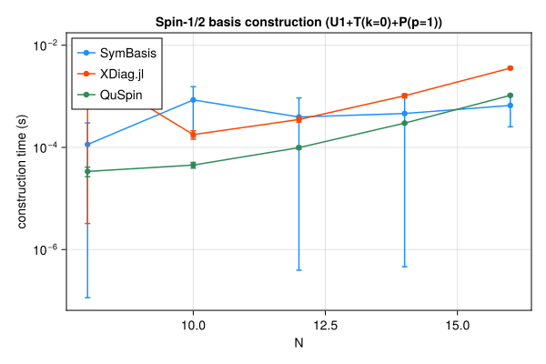
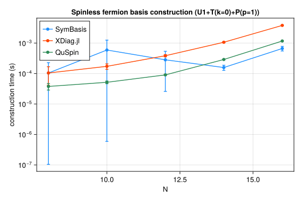
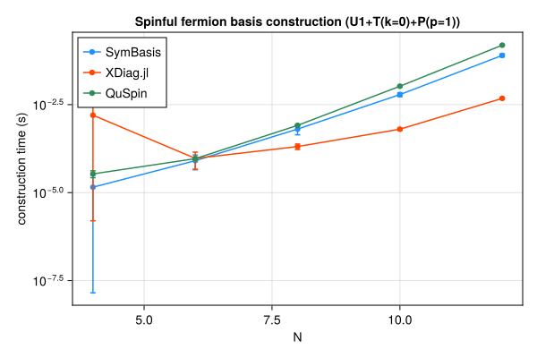
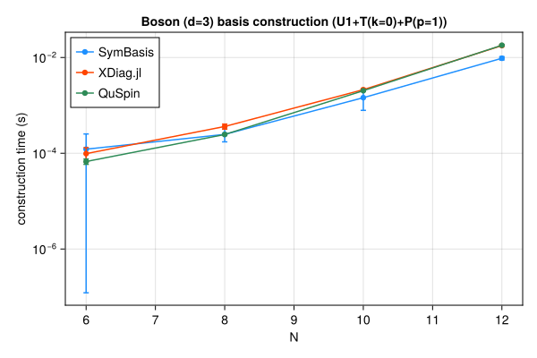

Symmetry-resolved basis construction and representative-state lookup speed, compared against XDiag.jl and QuSpin. SymBasis is benchmarked against its own dev checkout; XDiag.jl and QuSpin are whatever their latest released versions were at the time this page was generated. Regenerated automatically on every SymBasis release.
Threads are left at each library's own defaults (JULIA_NUM_THREADS=auto, OMP_NUM_THREADS unset) rather than pinned to 1 – these numbers reflect out-of-the-box performance, not a strictly single-threaded comparison.
Sweep: BENCH_SWEEP=quick
plot_construction("spin", "Spin-1/2")

| N | config | dim | SymBasis | XDiag | QuSpin | XDiag/SymBasis | QuSpin/SymBasis |
|---|
| 8 | U1 | 70 | 6.774e-06 ± 8.7e-06 s | 3.351e-06 ± 5.9e-06 s | 2.592e-05 ± 1.3e-05 s | 0.49x | 3.83x |
| 8 | U1+T(k=0) | 10 | 1.191e-05 ± 1.4e-05 s | 4.868e-05 ± 3.3e-05 s | 3.347e-05 ± 1.3e-05 s | 4.09x | 2.81x |
| 8 | U1+T(k=0)+P(p=1) | 8 | 0.0001142 ± 0.00019 s | 0.003239 ± 0.0067 s | 3.388e-05 ± 7.1e-06 s | 28.37x | 0.30x |
| 10 | U1 | 252 | 1.235e-05 ± 1.1e-05 s | 4.09e-06 ± 6e-06 s | 2.33e-05 ± 5.6e-06 s | 0.33x | 1.89x |
| 10 | U1+T(k=0) | 26 | 0.0005278 ± 0.00067 s | 8.609e-05 ± 2.6e-05 s | 3.871e-05 ± 6.3e-06 s | 0.16x | 0.07x |
| 10 | U1+T(k=0)+P(p=1) | 16 | 0.0008504 ± 0.00069 s | 0.0001782 ± 3.3e-05 s | 4.511e-05 ± 5.8e-06 s | 0.21x | 0.05x |
| 12 | U1 | 924 | 1.821e-05 ± 1.1e-05 s | 5.08e-06 ± 6.9e-06 s | 2.957e-05 ± 4.9e-06 s | 0.28x | 1.62x |
| 12 | U1+T(k=0) | 80 | 0.0006399 ± 0.00084 s | 0.0002155 ± 2.8e-05 s | 7.019e-05 ± 8.6e-06 s | 0.34x | 0.11x |
| 12 | U1+T(k=0)+P(p=1) | 50 | 0.0003943 ± 0.00054 s | 0.000352 ± 4e-05 s | 9.902e-05 ± 6.9e-06 s | 0.89x | 0.25x |
| 14 | U1 | 3432 | 9.11e-05 ± 2.3e-05 s | 6.186e-06 ± 7.5e-06 s | 4.993e-05 ± 4e-06 s | 0.07x | 0.55x |
| 14 | U1+T(k=0) | 246 | 0.0003405 ± 0.00054 s | 0.0008353 ± 5.3e-05 s | 0.0002087 ± 1.3e-05 s | 2.45x | 0.61x |
| 14 | U1+T(k=0)+P(p=1) | 133 | 0.0004614 ± 0.0006 s | 0.001026 ± 9.2e-05 s | 0.0002987 ± 8.2e-06 s | 2.22x | 0.65x |
| 16 | U1 | 12870 | 0.0004489 ± 0.00024 s | 8.433e-06 ± 9.1e-06 s | 0.0001289 ± 6.9e-06 s | 0.02x | 0.29x |
| 16 | U1+T(k=0) | 810 | 0.0003771 ± 0.00017 s | 0.002787 ± 8.8e-05 s | 0.00066 ± 2.1e-05 s | 7.39x | 1.75x |
| 16 | U1+T(k=0)+P(p=1) | 440 | 0.0006636 ± 0.00041 s | 0.003566 ± 0.0002 s | 0.001045 ± 2.5e-05 s | 5.37x | 1.57x |
| N | config | nsamples | SymBasis | XDiag | QuSpin |
|---|
| 16 | U1+T(k=0)+P(p=1) | 10000 | 1.063e-07 ± 9.4e-09 s | N/A (no decoupled API) | 1.805e-07 ± 1.6e-09 s |
plot_construction("fermion", "Spinless fermion")

| N | config | dim | SymBasis | XDiag | QuSpin | XDiag/SymBasis | QuSpin/SymBasis |
|---|
| 8 | U1 | 70 | 7.648e-06 ± 1.2e-05 s | 3.736e-06 ± 7e-06 s | 2.955e-05 ± 8.6e-06 s | 0.49x | 3.86x |
| 8 | U1+T(k=0) | 9 | 1.306e-05 ± 1.7e-05 s | 0.0001826 ± 0.00046 s | 3.273e-05 ± 5.6e-06 s | 13.98x | 2.51x |
| 8 | U1+T(k=0)+P(p=1) | 6 | 0.0001042 ± 0.00012 s | 0.0001044 ± 6.3e-05 s | 3.778e-05 ± 9.1e-06 s | 1.00x | 0.36x |
| 10 | U1 | 252 | 1.042e-05 ± 1e-05 s | 3.876e-06 ± 6.1e-06 s | 2.599e-05 ± 3.1e-06 s | 0.37x | 2.49x |
| 10 | U1+T(k=0) | 26 | 0.000739 ± 0.0008 s | 8.941e-05 ± 2.5e-05 s | 4.253e-05 ± 4.7e-06 s | 0.12x | 0.06x |
| 10 | U1+T(k=0)+P(p=1) | 16 | 0.0005926 ± 0.00066 s | 0.0001726 ± 3.5e-05 s | 5.166e-05 ± 5.1e-06 s | 0.29x | 0.09x |
| 12 | U1 | 924 | 2.296e-05 ± 1.2e-05 s | 5.171e-06 ± 6.7e-06 s | 3.415e-05 ± 4.5e-06 s | 0.23x | 1.49x |
| 12 | U1+T(k=0) | 76 | 7.747e-05 ± 6.8e-05 s | 0.0003817 ± 0.00046 s | 6.998e-05 ± 1.1e-05 s | 4.93x | 0.90x |
| 12 | U1+T(k=0)+P(p=1) | 33 | 0.0002822 ± 0.00026 s | 0.000385 ± 3.3e-05 s | 9.04e-05 ± 4.5e-06 s | 1.36x | 0.32x |
| 14 | U1 | 3432 | 0.0004567 ± 0.00074 s | 7.586e-06 ± 7.9e-06 s | 4.636e-05 ± 2.7e-06 s | 0.02x | 0.10x |
| 14 | U1+T(k=0) | 246 | 0.0001188 ± 2.7e-05 s | 0.0008426 ± 6.4e-05 s | 0.0001879 ± 6.6e-06 s | 7.09x | 1.58x |
| 14 | U1+T(k=0)+P(p=1) | 113 | 0.0001576 ± 3e-05 s | 0.001067 ± 4.8e-05 s | 0.0002895 ± 4.4e-06 s | 6.77x | 1.84x |
| 16 | U1 | 12870 | 0.0002964 ± 4.6e-05 s | 7.564e-06 ± 6.9e-06 s | 0.0001311 ± 3.9e-06 s | 0.03x | 0.44x |
| 16 | U1+T(k=0) | 809 | 0.0003323 ± 5.4e-05 s | 0.003262 ± 8.2e-05 s | 0.0007195 ± 3.1e-05 s | 9.82x | 2.17x |
| 16 | U1+T(k=0)+P(p=1) | 422 | 0.0006649 ± 0.00011 s | 0.003811 ± 9.8e-05 s | 0.001172 ± 1.4e-05 s | 5.73x | 1.76x |
| N | config | nsamples | SymBasis | XDiag | QuSpin |
|---|
| 16 | U1+T(k=0)+P(p=1) | 10000 | 1.39e-07 ± 2.1e-09 s | N/A (no decoupled API) | 1.859e-06 ± 5.9e-08 s |
plot_construction("spinful_fermion", "Spinful fermion")

| N | config | dim | SymBasis | XDiag | QuSpin | XDiag/SymBasis | QuSpin/SymBasis |
|---|
| 4 | U1 | 36 | 8.676e-06 ± 1.2e-05 s | 5.088e-06 ± 9.3e-06 s | 2.754e-05 ± 1.2e-05 s | 0.59x | 3.17x |
| 4 | U1+T(k=0) | 10 | 1.326e-05 ± 1.6e-05 s | 0.0004418 ± 0.0013 s | 3.416e-05 ± 1.1e-05 s | 33.32x | 2.58x |
| 4 | U1+T(k=0)+P(p=1) | 6 | 1.43e-05 ± 1.7e-05 s | 0.001586 ± 0.0049 s | 3.414e-05 ± 7.6e-06 s | 110.90x | 2.39x |
| 6 | U1 | 400 | 2.12e-05 ± 1.5e-05 s | 5.889e-06 ± 1e-05 s | 2.936e-05 ± 5.6e-06 s | 0.28x | 1.39x |
| 6 | U1+T(k=0) | 68 | 6.3e-05 ± 3.1e-05 s | 5.684e-05 ± 3.3e-05 s | 5.944e-05 ± 4.3e-06 s | 0.90x | 0.94x |
| 6 | U1+T(k=0)+P(p=1) | 38 | 8.103e-05 ± 3.6e-05 s | 9.392e-05 ± 4.8e-05 s | 9.246e-05 ± 5.3e-06 s | 1.16x | 1.14x |
| 8 | U1 | 4900 | 0.0002075 ± 2.4e-05 s | 5.795e-06 ± 9.2e-06 s | 9.55e-05 ± 5.5e-06 s | 0.03x | 0.46x |
| 8 | U1+T(k=0) | 618 | 0.0003681 ± 6.7e-05 s | 0.0001076 ± 3.8e-05 s | 0.0004783 ± 9.4e-06 s | 0.29x | 1.30x |
| 8 | U1+T(k=0)+P(p=1) | 318 | 0.0006406 ± 0.0002 s | 0.0002041 ± 3.6e-05 s | 0.0008152 ± 1.7e-05 s | 0.32x | 1.27x |
| 10 | U1 | 63504 | 0.002303 ± 0.00035 s | 5.576e-06 ± 8.8e-06 s | 0.001172 ± 4.8e-05 s | 0.00x | 0.51x |
| 10 | U1+T(k=0) | 6352 | 0.004119 ± 0.00039 s | 0.0002908 ± 3.9e-05 s | 0.006169 ± 0.00013 s | 0.07x | 1.50x |
| 10 | U1+T(k=0)+P(p=1) | 3212 | 0.006108 ± 0.00079 s | 0.0006349 ± 4.6e-05 s | 0.01056 ± 0.00033 s | 0.10x | 1.73x |
| 12 | U1 | 853776 | 0.02433 ± 0.011 s | 6.889e-06 ± 9.4e-06 s | 0.01535 ± 0.0011 s | 0.00x | 0.63x |
| 12 | U1+T(k=0) | 71188 | 0.05197 ± 0.01 s | 0.002302 ± 0.00015 s | 0.08949 ± 0.0014 s | 0.04x | 1.72x |
| 12 | U1+T(k=0)+P(p=1) | 35694 | 0.07922 ± 0.0078 s | 0.004763 ± 0.00027 s | 0.1547 ± 0.0055 s | 0.06x | 1.95x |
| N | config | nsamples | SymBasis | XDiag | QuSpin |
|---|
| 12 | U1+T(k=0)+P(p=1) | 10000 | 1.571e-06 ± 7.8e-08 s | N/A (no decoupled API) | 2.346e-06 ± 1.5e-07 s |
plot_construction("boson", "Boson (d=3)")

| N | config | dim | SymBasis | XDiag | QuSpin | XDiag/SymBasis | QuSpin/SymBasis |
|---|
| 6 | U1 | 141 | 1.263e-05 ± 1.2e-05 s | 4.863e-06 ± 6.9e-06 s | 4.091e-05 ± 1.2e-05 s | 0.38x | 3.24x |
| 6 | U1+T(k=0) | 26 | 2.383e-05 ± 1.8e-05 s | 4.787e-05 ± 2.1e-05 s | 5.695e-05 ± 1.3e-05 s | 2.01x | 2.39x |
| 6 | U1+T(k=0)+P(p=1) | 18 | 0.0001217 ± 0.00013 s | 9.817e-05 ± 3.2e-05 s | 6.722e-05 ± 8.5e-06 s | 0.81x | 0.55x |
| 8 | U1 | 1107 | 0.000401 ± 0.0006 s | 6.966e-06 ± 6.8e-06 s | 8.151e-05 ± 7.9e-06 s | 0.02x | 0.20x |
| 8 | U1+T(k=0) | 142 | 0.0002197 ± 0.00024 s | 0.0002138 ± 2.6e-05 s | 0.0002006 ± 1.9e-05 s | 0.97x | 0.91x |
| 8 | U1+T(k=0)+P(p=1) | 84 | 0.0002481 ± 7.5e-05 s | 0.0003624 ± 4.4e-05 s | 0.0002466 ± 7.5e-06 s | 1.46x | 0.99x |
| 10 | U1 | 8953 | 0.0005311 ± 0.00023 s | 1.355e-05 ± 7.6e-06 s | 0.0003142 ± 5.7e-06 s | 0.03x | 0.59x |
| 10 | U1+T(k=0) | 902 | 0.0007652 ± 5.1e-05 s | 0.001725 ± 8.8e-05 s | 0.001617 ± 1.9e-05 s | 2.25x | 2.11x |
| 10 | U1+T(k=0)+P(p=1) | 486 | 0.001448 ± 0.00066 s | 0.002131 ± 0.0001 s | 0.002028 ± 6.4e-05 s | 1.47x | 1.40x |
| 12 | U1 | 73789 | 0.002463 ± 0.00042 s | 3.077e-05 ± 8.9e-06 s | 0.002161 ± 0.00011 s | 0.01x | 0.88x |
| 12 | U1+T(k=0) | 6166 | 0.006149 ± 0.00081 s | 0.01589 ± 0.00041 s | 0.01378 ± 0.00037 s | 2.58x | 2.24x |
| 12 | U1+T(k=0)+P(p=1) | 3179 | 0.009646 ± 0.00077 s | 0.01774 ± 0.00038 s | 0.01804 ± 0.00055 s | 1.84x | 1.87x |
| N | config | nsamples | SymBasis | XDiag | QuSpin |
|---|
| 12 | U1+T(k=0)+P(p=1) | 10000 | 1.699e-06 ± 2.8e-08 s | N/A (no decoupled API) | 3.422e-07 ± 1.8e-08 s |